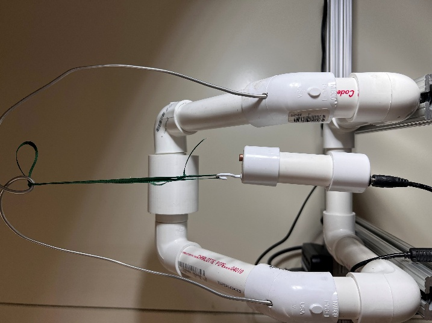
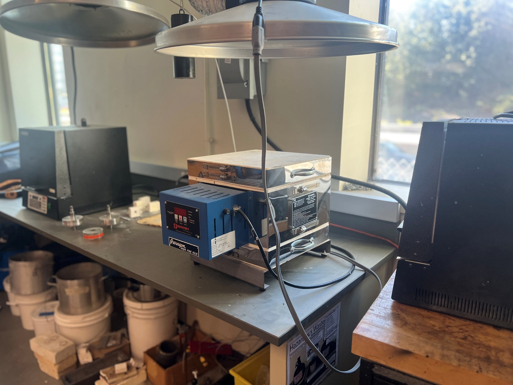

Metal 3D Printing (Metal-Infused Filament Workflow)
Summary: Designed and documented a complete BMD metal printing workflow using metal‑infused filament. Addressed filament brittleness with a custom spool holder and filament warmer, implemented purge procedures to prevent nozzle clogging, programmed debinding and sintering cycles, and characterised shrinkage to enable accurate scaling.
Overview
Bound Metal Deposition (BMD) uses plastic‑bound metal powder to produce a green part that must be carefully processed to become fully dense metal. I developed a repeatable workflow covering printing, debinding and sintering for BASF Ultrafuse 316L filament.
The work began by solving practical feed issues: the brittle filament snapped on standard spool feeds, so I designed a vertical spool holder with an adjacent warmer to soften the filament before it entered the extruder. A purge macro in the slicing profile flushes the nozzle with PLA immediately after each print to prevent powder from fusing and clogging the nozzle.
Debinding and sintering are performed in high‑temperature furnaces using custom programs that ramp, soak and cool the parts. After sintering the parts shrink ~20 % in each dimension; I measured the shrinkage of test coupons to derive scale factors and included guidelines for compensating CAD models.
Tools and skills
Key contributions
- Designed a vertical spool holder and integrated filament warmer to mitigate brittle filament breakage.
- Authored a purge routine to clear the nozzle of metal powder and avoid clogging.
- Developed debinding and sintering schedules with ramp, soak and cooling cycles for reliable densification.
- Measured dimensional shrinkage and provided scaling guidance for CAD models.
- Compiled a comprehensive operations guide covering printer setup, post‑processing and troubleshooting.
Printer & feed modifications

Vertical spool holder with integrated warmer prevents brittle filament breakage.
Debinding & sintering

Furnace used to debind and sinter printed parts.